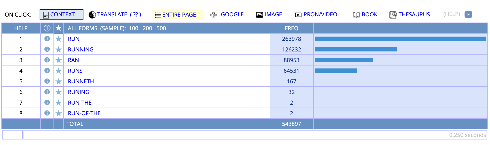

Session 3: Hands-on #1
Basic Concordancing
Housekeeping
Session overview
- Corpus lab assignment overview
- Corpus Research Cycle (Cont’d)
- Operationalization
- Testing
- Interpretation
Corpus lab 1
Goals and Overview
This assignment aims to help you practice the following skills:
- Articulating linguistic research questions for corpus-driven research
- Explaining corpus choices and analysis approach for basic corpus search
- Interpreting and describing the basic concordance search results
Goals and overview
- Task 1: Constructing corpus-search research question and hypothesis
- Task 2: Methods
- Task 3: Result
Task 1: Research question and hypothesis
In this task, you are asked to articulate your research question and hypothesis for your first corpus assignment.
Research question:
- Research questions should be answerable.
- Write one (or two related) research questions you would like to answer through this assignment.
Task 1: Research question and hypothesis
Hypothesis:
- Once you decided on research question, state your hypothesis.
- Write a short paragraph stating your hypothesis and why you think your research hypotheses may be true.
Task 2: Methods
In this task, you are asked to describe the methods choice of your corpus search. This should include justifications for the corpora used, type of corpus search used.
Corpora
- Which corpora or sub-section of a corpus would you conduct a search on? Why? Justify your choice in a paragraph.
Task 2: Methods (cont’d)
Search Methods and Plan
- What corpus search methods would you choose and why? In this assignment, search methods mainly include methods available through English-Corpora.org, including
LIST,Chart,Collocates,CompareandKWIC. - In what way are you planning to conduct the search and what kind of information are you expecting from it?
Task 3: Result
In this part of the assignment, you are asked to describe the search results and provide interpretations on the findings.
Corpus search results: Provide some numbers or discourse samples based on your corpus search. This can be frequency list, table with frequency counts, or a copy of KWIC results.
Interpretation: Write a paragraph, providing some interpretations of your findings.
Submission
Success Criteria
Your submission …
Recap: The Scientific Research Cycle
Remember from Session 2:
- Verbalize your question
- Formulate research questions
- Formulate hypothesis
- Choose appropriate corpus
- → Operationalize
- → Test & Evaluate
Part 2: Operationalizing Your Search
What does “operationalize” mean?
- Defining exactly WHAT to search
- Deciding HOW to search it
- Being explicit about your choices
Measure of height
- How to operationalize “height”?
- Meter? Feet?
Task A - Simple word search
First corpus search
Let’s operationalize a foundational concept in linguistic research, word.
Concept to operationalize: The word “run”
What is possible operationalization?
That is, what search term would you like to enter below?
Search field
Result of the search with run
- Yes, you now get the frequency result (=
264014). - You might get slightly different results.
Search - run
Let’s look at the context
- Wait a minute… where is
runs,ran, andrunning?

Thinking about the operationalization
Now we recognized that the word
runwas just one of the possible forms of the headword run.If we were thinking to retrieve all the occurence of the word “run” then we were imprecise.
What should we do?
Lemma
Lemma: A headword and all the inflected form derived from it.
RUN:
- run, ran, runs, running… etc.
Refining our operationalization
- Concept: All forms of “run”
- Better operationalization: Search for LEMMA
Task A.2 - LEMMA search
LEMMA search
- You can search LEMMA in English-Corpora.org through Capital letters.
- The search methods will depend on the corpus tool you use.
LEMMA search
Searching lemma - run
LEMMA search result - run
Search result
Task A.2 - POS search
Now you might wonder:
- Research question: “How often is ‘run’ used as a noun vs. verb?”
→ This is even more precise operationalization of word by its grammatical category.
Specifying Part Of Speech (POS)
You can use POS tag like the following .
| Category | Simple tag | Symbol | Example |
|---|---|---|---|
| Common noun | NOUN | N | run_N |
| Proper Nouns | NAME | NP | Sendai_N |
| All nouns | NOUN+ | N+ | sun_N+, Sendai_N+ |
| Lexical verbs | VERB | V | run_V |
| All verbs | VERB+ | V | run_V+, do_V+ |
Specifying Part Of Speech (POS)
| Category | Simple tag | Symbol | Example |
|---|---|---|---|
| Adjectives | ADJ | J | simple_ADJ |
| Adverbs | ADV | R | clear_ADV |
| Preposition | PREP | - | in_PREP |
| Articles | ART | - | her_ART |
| Determiners | DET | - | these_DET |
| Conjunctions | CONJ | - | because_CONJ |
See this page for more information of POS in English-Corpora.org
the word run used as noun
- Search occurrences of
runthat are used as nouns.
the word run used as noun
Search: run_N
run - as noun
Your turn: Operationalize these concepts
- All forms of the adjective “exciting”
- The word “chair” as a noun only
Task B - Basic KWIC
Concordances (or KWIC)
- Now we know frequency of X in COCA, but what about context?
KWIC = Key Word In Context
KWIC will give us insights into how each word is used in context.
KWIC view
- Go back to
SEARCHwindow.
KWIC search
KWIC view
- Click on the + button in the search menu and enter your search word.
KWIC search
KWIC view
- The result is displayed. Default sort : R1 > R2 > R3
KWIC search
Sorting KWIC window
- Now let’s sort the results according to the position in context.
KWIC search
Sorting words
You can sort the words.

KWIC search
Sorting to find patterns
Sorting helps identify: - Common phrases - Grammatical patterns
- Semantic preferences
Let’s Try: KWIC
Choose a word that you want to see the context for.
Search the word with
KWIC.Sort the word in the following way.
- Default: R1 > R2 > R3
- Custom 1: L1 > L2 > L3
- Custom 2: L1 > R1 > R2
How to get Custom 1 and 2
KWIC search
Practice: Finding patterns
Search “prove” (lemma) and sort by: 1. R1 (what follows “prove”?) 2. L1 (what precedes “prove”?)
What patterns do you notice?
Task C
Research question: How does frequency of lol change across time?
Chart function
CHART shows frequency across: - Genres - Time periods - Text types
- This allows you to return frequency by sections of of COCA (= conditional frequency).
Search lol using CHART
- Go to Search Tab, select,
CHARTand enterlol
Search lol using CHART
- You will get the following:
- What do you notice here?
Search - lol
Interpreting the distribution
What does this tell us about “lol”? - Genre preferences? - Formality levels? - Change over time?
- Describe the frequency pattern looking at
PER MILrow.
Summary
CHART function can be used to get frequency across: - Genres - Time periods - Text types
Task D
Research question: What is most frequent word that ends with derivational mopheme -ness?
Regular expressions
Regular expression (正規表現) allows you to search corpus through “pattern matching”.
- Have you ever used (*) asterisk in your web search?
- This is one of the regular expression (= wild card)
Using regular expression to get words with specific morpheme
Any idea for operationalizing derivational morphemes?
- Operationalization:
*ness
Results of *ness
Search results *ness
Using wild card for lexicalized pattern
Let’s go back to
Listsearch.Enter “a * of the”
What result do you expect with this search?
Don’t turn to the next page YET!!!
Result with a * of the
a * of the
This helps find: - Fixed phrases with variable slots - Grammatical frames - Idiomatic expressions
More search methods
- You can check how to use other search methods in English-Corpora.org here
More complex searches
Which is more frequent? - exciting or excited?
- Is there any reletitive phrase with three adjectives?
ADJ x 3
three adjectives
- Note: Sometimes the search results will contain parsing errors. (We will come back to this topic on Day 4.)
Task E - Collocation (Skip if no time)
Collocation search
- This is main topic for Day 3.
- Briefly,
collocatessearch allows us to search for co-occurring words within specified window.
Collocation search
- Select
collocates
collocation
Collocation search
- Enter search word
entering words
Collocation search
- Optional enter the word to look for
enter collocates
Collocation search
- Specify window
- How distant do you search for the collocates
window
Search Methods Summary
| Method | Purpose | Example | Key Features |
|---|---|---|---|
| Simple Word | Find exact word forms | run → finds only “run” |
- Case sensitive - Single form only |
| LEMMA | Find all forms of a word | RUN → finds “run, runs, ran, running” |
- Use CAPITAL letters - Includes all inflections |
| POS Tag | Find words by grammatical category | run_N (noun)run_V (verb) |
- Disambiguates word classes - Use underscore + tag |
Search Methods Summary
| Method | Purpose | Example | Key Features |
|---|---|---|---|
| KWIC | View words in context | Any search term | - Sort by L1, R1, etc. - Find patterns in usage |
| CHART | Track frequency across categories | lol across time/genres |
- Shows distribution - Genre/time comparisons |
| Wildcards | Pattern matching | *ness → “happiness”a * of the → “a lot of the” |
- * = any characters- Find lexical patterns |
| Collocates | Find co-occurring words | Words near target | - Specify window size - Statistical associations |
Bringing It All Together: Corpus Lab 1
Your Assignment Structure
- Research Question & Hypothesis (Sessions 1-2)
- Methods (Session 2-3)
- Choose corpus
- Operationalize search methods and terms
- Results (Session 3)
- Conduct searches
- Interpret findings
Research question:
- Should be answerable with corpus data
- Focus on distribution/frequency/context
Hypothesis:
- Make a prediction
- Explain your reasoning using the template we have used
Task 2: Methods
Corpus Selection
- Which corpus/corpora?
- Why did you choose it/them?
- What does it allow you to test?
Search Plan
- How will you operationalize your concepts?
- LIST, CHART, KWIC, or combination?
- Any special search syntax needed?
Task 3: Results
Present your findings:
- Frequency tables
- KWIC samples
- Distribution charts
Interpret the patterns:
- What do the numbers mean?
- What do the contexts reveal?
- Does this support your hypothesis?
Submission
Success Criteria
Your submission …
Start thinking now!
What patterns in English interest you?
Consider: - Words that seem to be changing - Regional differences - Formal vs. informal patterns - New expressions - Grammar variations
Summary
Today’s achievement
- Operationalize linguistic concepts for corpus search
- Use different search types (word, LEMMA, POS)
- Analyze patterns through KWIC
- Evaluate distributions with CHART
- Apply the full research cycle
Linguistic Data Analysis I